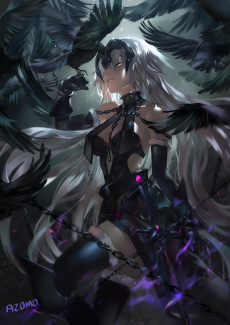

Yuna
Hístoria
Uma samurai renomada em uma terra distante, especializada no estilo de duas espadas juntamente com seu pet raposa 🦊 estavam atras da força verdadeira, ela então parte atras de diferentes oponentes para incrementar sua força até encontra uma cidade inteira em ruinas ela curiosa e animada para encontra o ser que tinha feito aquilo com a cidade, ela encontra bem no centro da cidade um espirito que se autointitulava um imperador de um passado distante, o espírito de repente tenta possui o corpo dela, o espirito só não esperava q ela teve uma resistência espiritual incomparável, ela então o dividiu em quatro partes, duas delas foram para as espadas, uma tentou escapa mais foi tomada pela a raposa que a seguia, e a última e a mais poderosa ela deixou dentro do seu corpo na esperança de ter poder para dominar aquele fragmento de espirito. Após esse fato ela descobre que tanto as espadas quanto a raposa e o corpo dela tinham sofrido uma mudança e que obtiveram certas características.
Uma das espadas ganhou uma "skill" de corte sem igual, um simples movimento pode cortar um animal selvagem eu vários pedaços, à outra espada teve seu corpo alterado para uma espada um poco mais larga e mais fina e ganhou a skill de controlar o saguem que a outra espada toca, inclusive o sangue de cortes que as duas infligem, a raposa 🦊 adquiriu skills espirituais, ela agora pode identificar e se comunicar tanto com espíritos quanto outras formas de vida ao redor, ela também pode identificar qual dos seres em seu redor e o mais forte e de se transforma em uma espécie de kyuubi , mais ainda não domina essa transformação, e a samurai que tem o fragmento do espirito mais forte em seu corpo percebe que ela própria sofreu mudanças, ela ficou com um corpo mais robusto e poderoso teve todas as suas aptidões físicas melhoradas e ganhou duas skills uma delas e o link espiritual, essas kill permiti saber a localização exata dos fragmentos do espirito e também de atrair esses fragmentos de volta para a samurai, a outra skill e uma q permite a utilização de todo o poder desse espirito do antigo imperador fortificando todas as outras skills tanto das espadas quanto da raposa a samurai também ganha diversas skills além de aumentar ainda mais suas aptidões físicas, e tanto poder que a samurai todas as vezes q utiliza essa skill sua personalidade quebra de pouco em pouco deixando-a com uma vontade descomunal de sangue e guerra.
Poder
FOGO
Skills
Em Chamas nv1: Imbuir uma parte do corpo ou objetos em minha posse com Fogo(3espirito)
Getsuga Tensho nv1: Um corte na horizontal que afeta todos os que forem pegos{1d6+poder}.(quando usada tem que dividir o dano causado em si proprio e a um aliado de time ou você pode trasferir um dano e o outro pra curar você ou um aliado de time);também(posso tomar o dano e me curar pra anular o debuf)(4espirito)
Status
- Hp: 2+4(armor)
- Força: 7+2
- Velocidade: 5-1
- Destreza: 6
- Luta: 8
- Esquiva: 5
- Furtividade: 2
- Arma corpo a corpo: 8+2
- Arremesso: 4
- Montaria: 2
- Medicina: 2+1
- Labia: 1
- Aparencia: 2
- Rastreamento: 2
- Explosivo: 1
- Domador: 1
- Lv.Trevas: 1
- KarmaTrevas:80
- Espirito:2
- Criação de item: 1
- Uso de instrumento: 1
- Resistência: 5
- Poder: 3+2
- Natação: 3
- Acrobacia: 2
- Percepção 3
- Blefar: 1
- Persuasão: 1
- Historia: 2
- Sabedoria: 2+1
- Intuição: 3
- Atletismo: 2
- Equilibrio: 2
- Intimidar: 2
- Lv.Luz: 1
- KarmaLuz:50
Inventário
- pesso:60
- Mobiliade: 5
- Espada que corta qualquer coisa.(1d6+1d4+força)
- Espada que controla todas as feridas causadas por ambas as espadas.(1d6+1d4+força)
- Raposa como suporte.
- Mascara Oni.
- kunai
- Gold:000